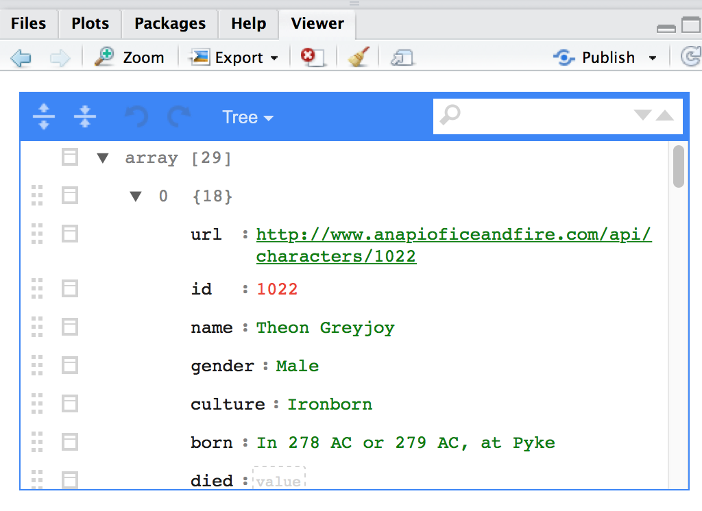
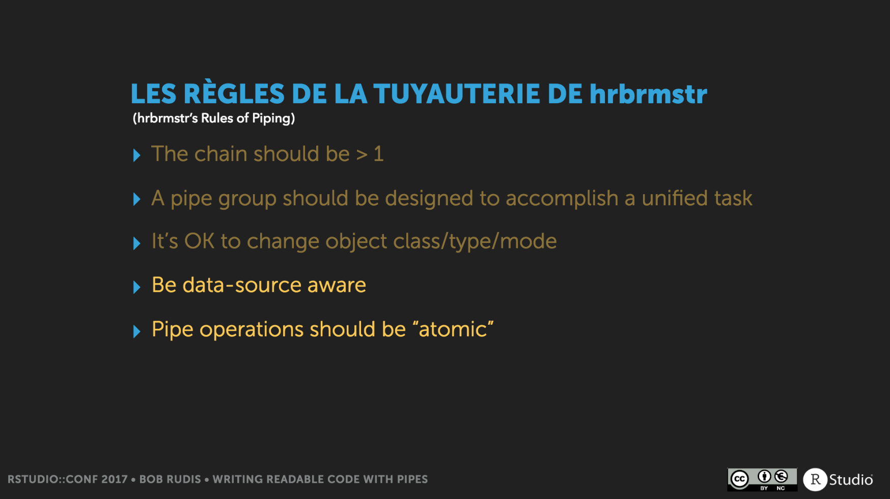

This is the second part of my posts on the rstudio::conf. If you’re interested in more general thoughts on the conference and some personal notes, check out my other post. This post is to gather, as succintly and organized as possible, the practical and technical things I learned at the conference. While I did a whole training day on writing R Packages, I haven’t included most of what I’ve learned here. Instead, I’ll be integrating it into a future post on writing my first R package.
Useful Packages, Tools, and Functions
Assertr’s verify function: The verify function is meant for use in a data analysis pipeline. It raises an error if the logical within the function is false and just returns the data if True. This is a great way to add some assumption checks in your data pipelines. For example,
mtcars %>% verify(nrow(.) == 32) %>% filter(cyl == 6)simply returns the data frame of all cars with 6 cylinders, as expected, becausemtcarsdoes indeed have 32 rows. If, however, we had put the wrong number of rows in (e.g.verify(nrow(.) == 24)), we would have gotten no data, with this error instead:Error in verify(., nrow(.) == 24) : verification failed! (1 failure).Profvis: This is a tool to visualize how long each part of your code is taking to run. This is a great way to figure out how to speed up your code, as often your intuition of what is taking the most time does not match reality. To use it, all you have to do is wrap your code in the profvis function, like so:
profvis({ my_function }). A new pane will then pop up in RStudio that shows how long each line takes to run and even what functions each calls. Learn more on the RStudio Profvis page.Abbreviating arguments: You can abbreviate arguments within functions. So instead of writing
mean(c(10, 5, NA), na.rm = TRUE), you can simply rightmean(c(10, 5, NA), n = T). CAUTION: this can go wrong, especially in the case of using T and F as abbreviations for TRUE and FALSE. For example, if for some reason you (or an evil coworker) had putT <- Fbefore you run this code, now your output will beNA!Listviewer: One of the hardest parts about working with nested lists is trying to figure out what the heck is in them. The
jsoneditfunction from listviewer allows you to see the layers of a list and even search through them. Here’s what it looks like when I run it with got_chars, a list from Jenny Bryan’s great repurrrsive package:

Writing Functions
- When writing a function, the last thing you should do is start writing a function. You should always start by figuring out how to solve problems with specific x and y and then generalize.
- It’s better to do little steps and check after each one. That way you don’t go a long way, realize you did something wrong, and have to backtrack hours of work.
- It’s time to write a function when you copy and paste three times. Copying and pasting too much is bad because it increases the possibility for error and clutters up your code.
- A function is “pure” if its output only depends on its input and it makes no changes to state of the world (such as resetting options).
- Try to make functions “purer” by having it do one thing. You can put the other things in a different function.
- Properties of a good function
- It does one thing (avoids side effects)
- The output is consistent, meaning it always returns the same type of object (e.g. dataframe, character vector, etc.)
- It fails fast
- It has a good name: not too long and makes it clear what the function does
- It works
- Your function should be understandable. This is about being correct in the future. Often what you want to do is going to change over time, and if you can’t understand how a function works, your chances of making a change correctly is smaller. If you try to make your function too clever, you’ll probably end up like this
.@hadleywickham on clever programming solutions
— Emily Robinson (@robinson_es) January 11, 2017
Now: "My god I am a total coding genius”
3 months later: "I have no idea what this means"
- Writing good error messages is really hard, because it relies on you having good mental model of someone else’s flawed mental model of your function.
- Only ever use return for special cases. If a function can return early, it should use an explicit return call. Otherwise return just adds verbosity for no real reason. You want to save return as a call out to mean this is special case.
- Don’t write functions that both compute something and then do something with it. For example, the
summaryfunction for a linear model both computes and prints the p-value
Keyboard Shortcuts
- Hit tab after you start typing to get all functions that start with those letters. Cmd/Ctrl + up arrow instead gives you the commands you’ve typed
- Hold alt and drag your cursor to type on multiple lines
- Alt + shift + k for all keyboard shortcuts
- And you can make your own keyboard shortcuts
General Tips and Tricks
- Reading rcode broadly is useful, as it can help expand your R vocabulary.
- Hadley sets these options in R, to avoid the pitfalls of R’s “helpful” partial name matching
options(warnPartialMatchArgs = TRUE, warnPartialMatchDollar = TRUE, warnPartialMatchAttr = TRUE)- Most of the time the bottleneck is thinking speed, not computational speed
- Don’t proactively worry about performance of your code, but about whether it’s clear.
- Don’t try to read your code and think whether it will be fast or slow. Your intuition is terrible. Just run it! You can also use
profvisto help. - It’s very easy to make code faster by making it incorrect. One of the reasons to write tests!
- Restart R a few times a day and never restore or save your .RData. This will help the reproducibility of your code and also if your coworkers do something like redefine
+(yes, you can do that in R). - Don’t use comments to say what/how your code is doing, use it to describe why. Otherwise, you have to remember to change comments when you change your code. You really don’t want to end up with your code doing one thing and your comment saying you’re doing something else.
- You can be too verbose in your code because don’t have enough r vocabulary. For example:
if(x == TRUE)is the same asif(x)y == "a" | y == "b" | y == "c"is the same asy %in% c("a", "b", “c”)
- Bob Rudis’ five rules for using pipes. P.S. This was probably the most elaborate and fun slideshow. Definitely check it out!

Other Conference Write-Ups
- Sharon Machlis’s tips and takeaways, which is in a bullet-point and short paragraph format. This is a great complement to this list, since hers are from the conference talks and most of mine are from the training days with Hadley
- Stephen Turner’s recap, with nice short summaries of some of the talks
- Simon Jackson’s takeaways from the conference, organized around the opinions and challenges about data science processes in the R community. This organizational schema was inspired by Hilary Parker’s great talk on Opinionated Analysis Development